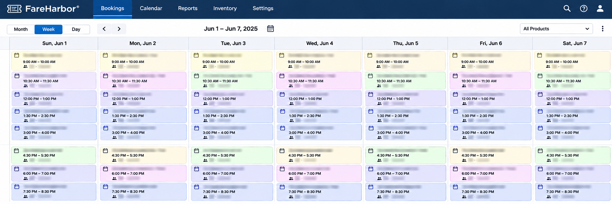
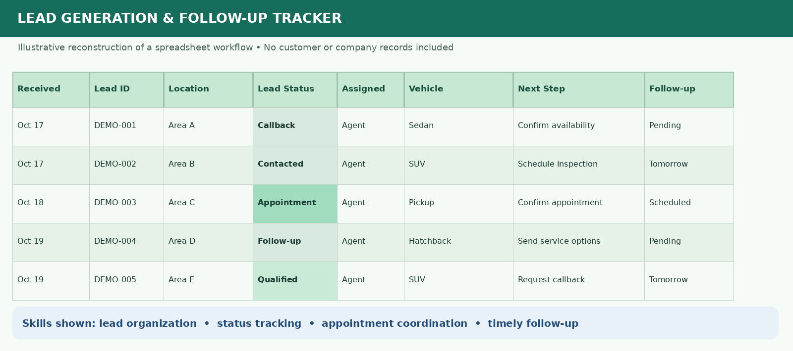
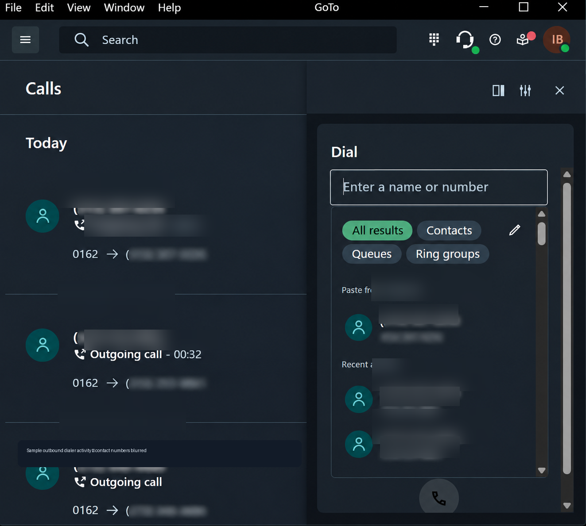
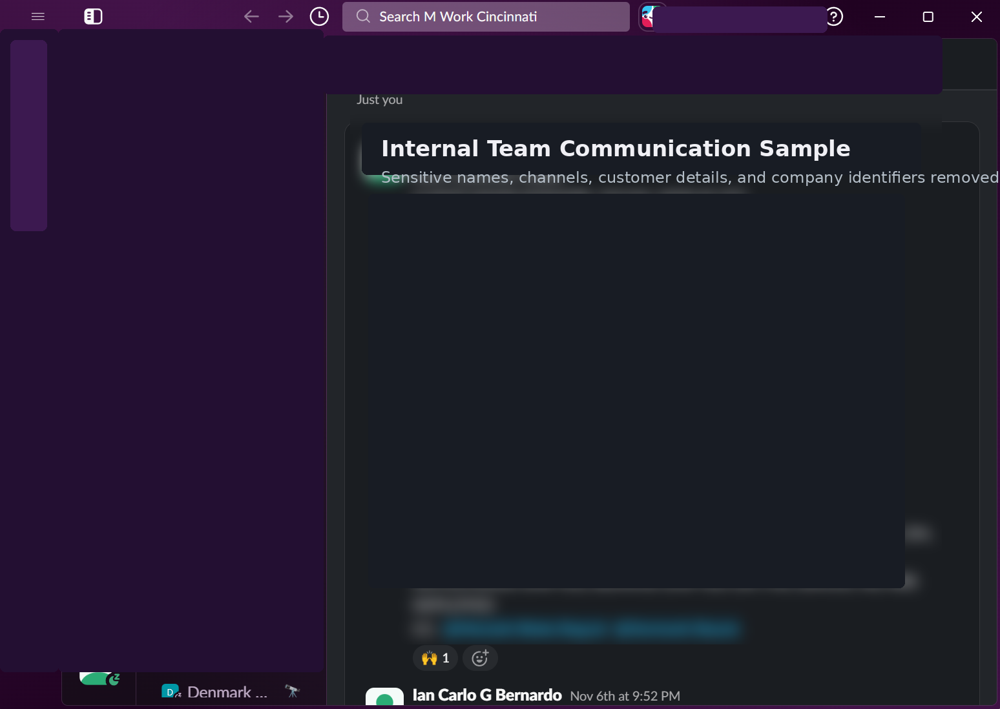
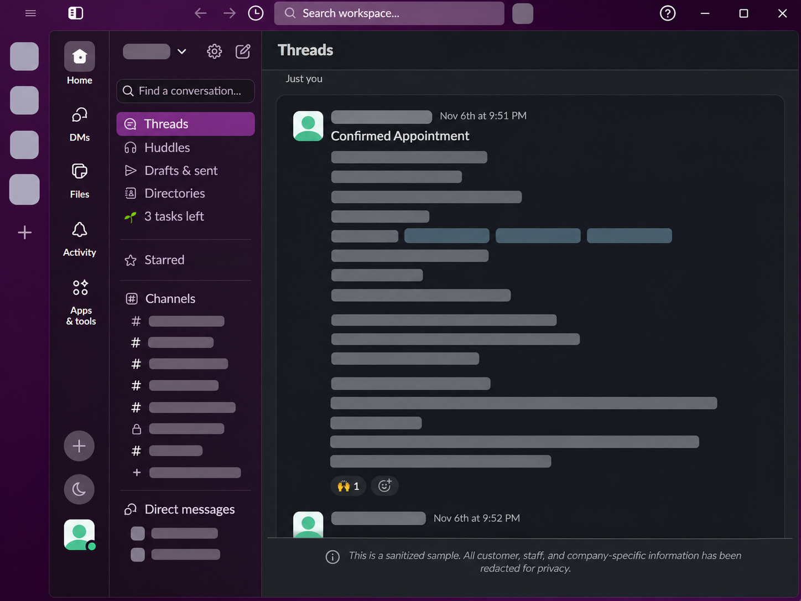
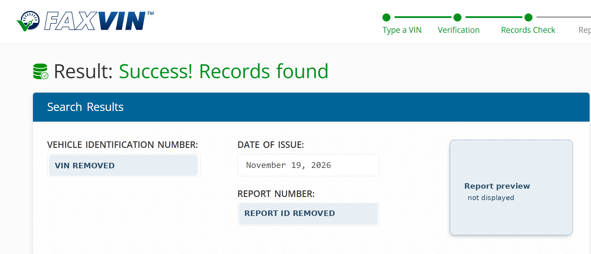
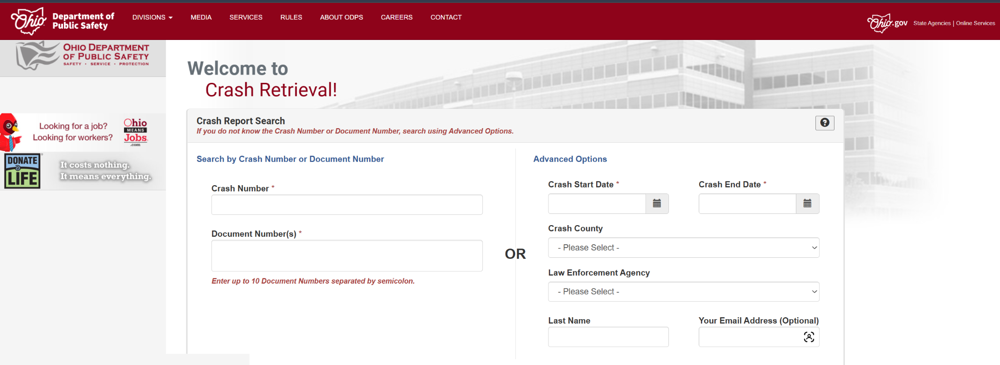
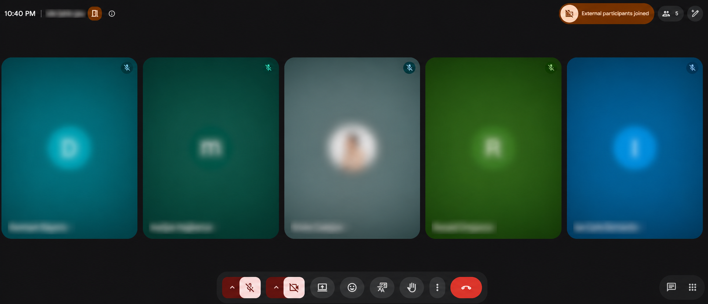

Sales Manager • Mworks Auto Repair Shop
Handled outbound calls, lead generation, appointment scheduling, insurance-claim assistance, towing coordination, and customer follow-ups.
Virtual Assistant • Customer Support • Sales Specialist • Booking Agent
I’m Ian Carlo Bernardo, a Business Management graduate with experience in sales, customer service, booking management, scheduling, outbound calling, and remote support.
About Me
I have experience supporting customers and operations across automotive, tourism, telecommunications, and retail environments. My work has included handling guest inquiries, reservations, payments, booking changes, appointment scheduling, customer follow-ups, towing coordination, and outbound sales support.
I work confidently with remote tools and communication platforms and enjoy helping businesses stay organized while giving customers a smooth and positive experience.
Experience
Handled outbound calls, lead generation, appointment scheduling, insurance-claim assistance, towing coordination, and customer follow-ups.
Managed reservations, guest inquiries, payments, booking changes, cancellations, and schedule coordination using remote tools.
Provided phone-based technical support, answered customer concerns, and assisted with service-related troubleshooting.
Prepared, weighed, packaged, and handled meat products while maintaining cleanliness, safe storage, and customer service standards.
Skills & Tools
FareHarbor, HubSpot, Sales Lead Manager
RingCentral, Five9, GoTo, Slack, Discord
Gmail, Zoho Mail, Google Workspace, DocuSign
Google Sheets, spreadsheets, customer tracking
Cold calling, lead generation, objection handling, appointment setting
Scheduling, dispatch coordination, guest follow-up, customer service
Work Samples
Customer names, contact information, booking references, and internal identifiers are excluded. The lead tracker is a fictional reconstruction to demonstrate the workflow.

Illustrative, privacy-safe June 2025 calendar showing how I monitored tour schedules, checked availability, and coordinated reservations. Booking and staff details are obscured.

Privacy-safe reconstruction of a lead tracking workflow for contact follow-ups, appointment statuses, and next actions. All entries are fictional.

Sample of dialer activity used for outbound calls, customer contact, and follow-up communication.

Sample of internal coordination and workflow communication using a team messaging platform.

Sample of confirmation and internal coordination for appointments using a team communication workspace.

Used a vehicle-history lookup tool to help check vehicle identification details during automotive customer intake. All VIN and report identifiers are removed.

Used an official crash-report search interface to locate relevant accident records for customer support and insurance-claim coordination. Screenshot shows a blank search form.

Used virtual team meetings to ask work-related questions, coordinate tasks, and get support with customer concerns. Participant identities and meeting details are obscured in this privacy-safe recreation.
Education
Completed on-the-job training at Harris Teeter and Duck Donuts from July to September 2018, with experience in retail operations, food service, and customer support.
Contact
If you’re looking for someone reliable, organized, and comfortable with customer support, bookings, sales support, and remote tools, I’d be happy to connect.
Email: icg.bernardo@gmail.com
Phone: +63 977 097 7223
Location: Obando, Bulacan, Philippines
Resume: Download PDF